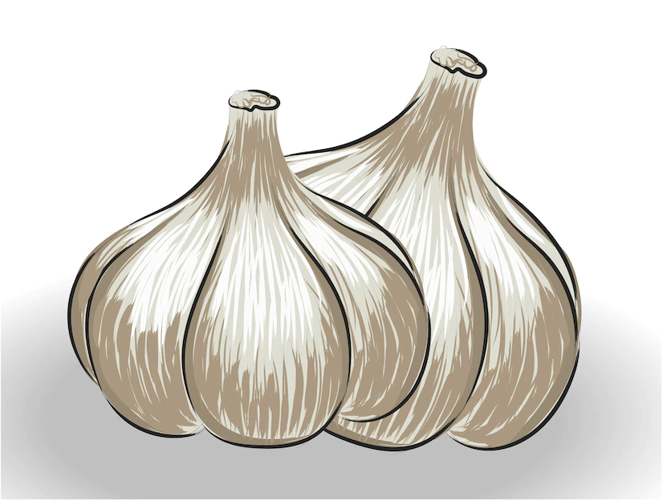
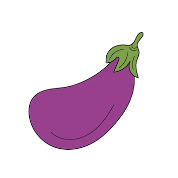
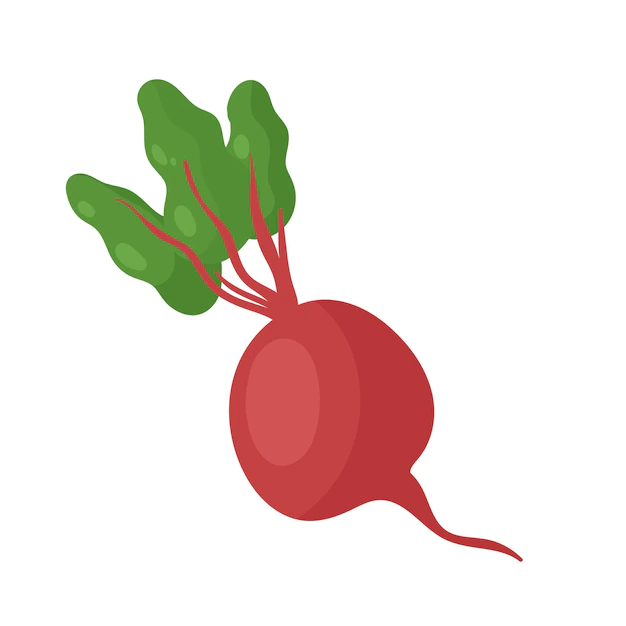
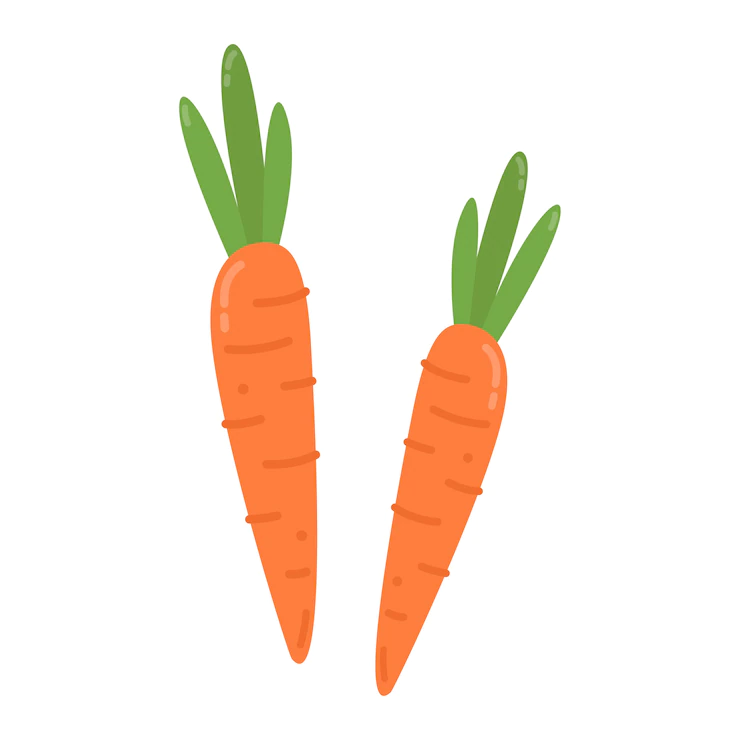
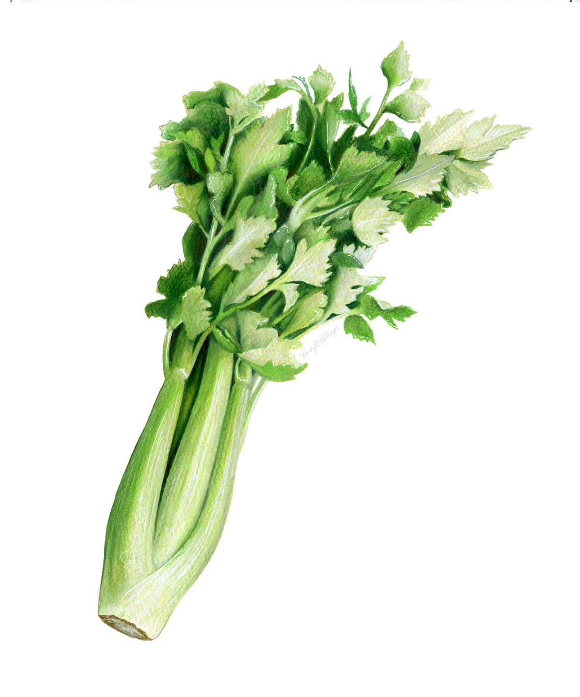
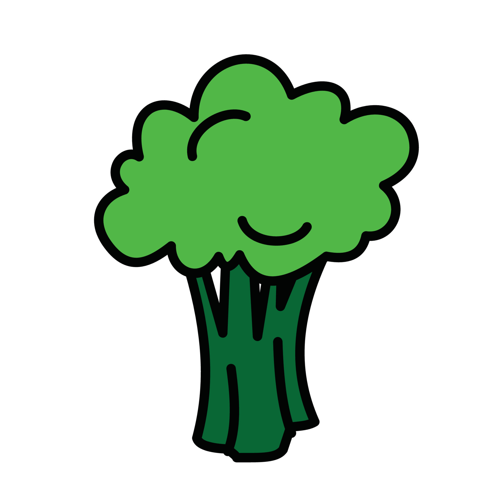
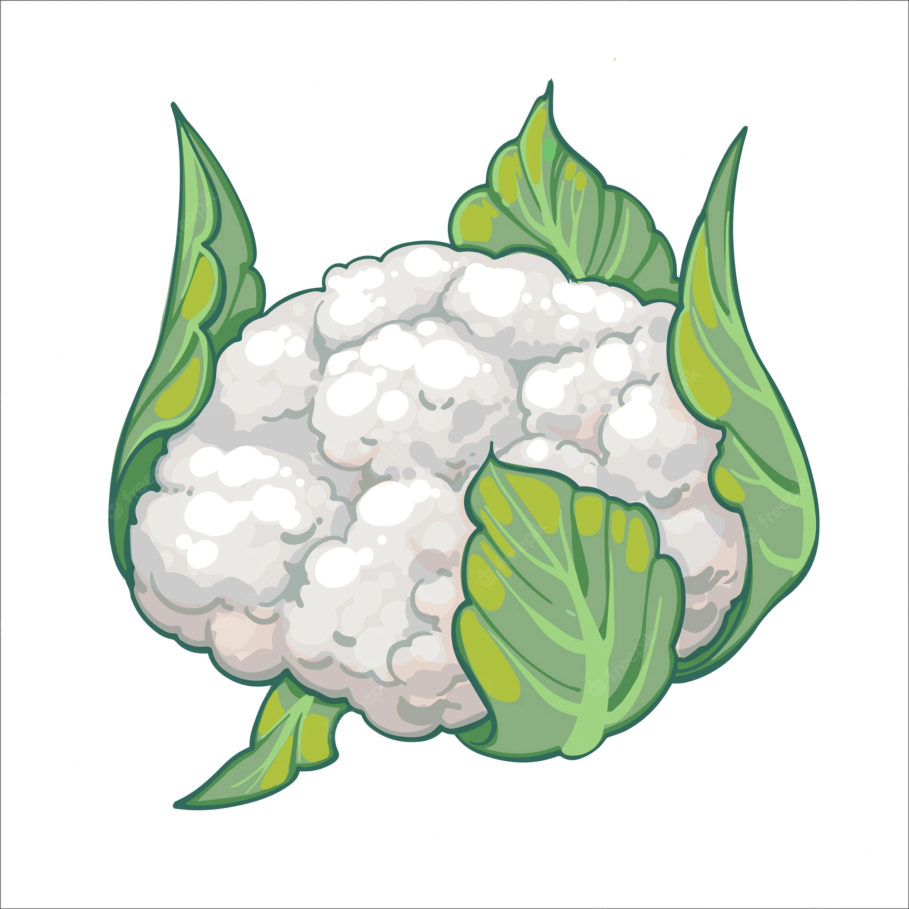

| FRUIT ET LEGUME | SEMIS | PLANTATION | RCOLTE | |
|---|---|---|---|---|
|  | AIL | Pas de semis pour eviter les maladies | En Automne pour les ail blanc et violet De Décembre à fin mars pour l'ail rose | En juillet-août, quand les feuilles jaunissent et sèchent |
|  | AUBERGINE | Février à l'intérieur, Mars sous abri |
Repiquer en Mai, à 50cm de distance |
Août à début Novembre, quand les fruits mésurent de 8 à 15cm de long |
|  | BATTERAVE | De Mars jusqu'à Juin |
Eclaircir à 20cm |
Juillet à novembre selon période de semis |
|  | CAROTTE | Semis sous abri des carottes Février à Juin |
Eclaircir à 8-12cm |
Juillet à décembre |
|  | CELERI | février à mars |
Répiquer en juin, à 30cm de distance |
août à novembre au fur et à mésure des besoins |
|  | BROCOLI | entre Mars et Août |
Mai à 30cm de distance |
Octobre - Mai |
|  | CHOU-FLEUR | V. d'été Février - mars V. d'automne Mars - juin V. d'hiver Mai - juin |
En fonction des V. , à 50cm de distance |
En fonction des V. , quand la tete bien formmée |